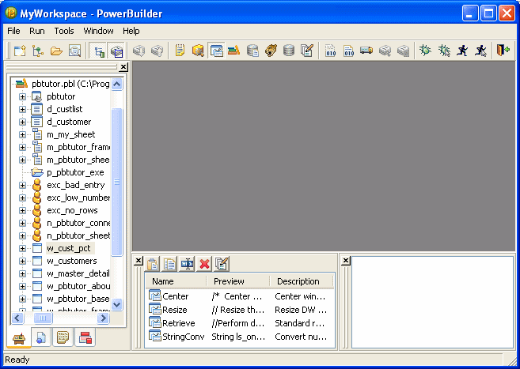
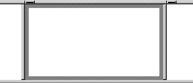
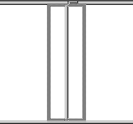
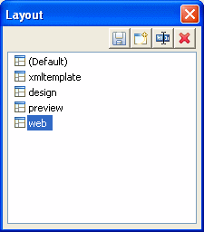

You can change the layout of the PowerBuilder main window in several ways. This section describes:
You can also show or hide toolbars, change their locations, and add custom buttons. See "Using toolbars".
The System Tree, Output, and Clip windows can all be hidden at any time by clicking their buttons on the PowerBar.
You can dock the System Tree, Output, and Clip windows at the top, bottom, left, or right of the PowerBuilder main window by dragging the double bar at the top or side of the windows.
Windows docked at the top or bottom of the main window occupy the full width of the frame. You can change this default by clearing the Horizontal Dock Windows Dominate check box on the General page System Options dialog box. The following screen shows the Clip and Output windows docked at the bottom of the window. The Horizontal Dock Windows Dominate check box has been cleared so that the System Tree occupies the full height of the window:

Most of the PowerBuilder painters have views. Each view provides a specific way of viewing or modifying the object you are creating or a specific kind of information related to that object. Having multiple views available in a painter window means you can work on more than one task at a time. In the Window painter, for example, you can select a control in the Layout view to modify its properties, and double-click the control to edit its scripts.
Views are displayed in panes in the painter window. Some views are stacked in a single pane. At the bottom of the pane there is a tab for each view in the stack. Clicking the tab for a view pops that view to the top of the stack.
Each painter has a default layout, but you can display the views you choose in as many panes as you want to and save the layouts you like to work with. For some painters, all available views are included in the default layout; for others, only a few views are included.
Each pane has:
For most views, a title bar does not permanently display at the top of a pane because it is often unnecessary, but you can display a title bar for any pane either temporarily or permanently.
 To display a title bar:
To display a title bar:
Place the pointer on the splitter bar at the top of the pane.
The title bar displays.
To display the title bar permanently, click the pushpin at the left of the title bar or select Pinned from its pop-up menu.
Click the pushpin again or select Pinned again on the pop-up menu to hide the title bar.
After you display a title bar either temporarily or permanently, you can use the title bar's pop-up menu.
 To maximize a pane to fill the workspace:
To maximize a pane to fill the workspace:
Select Maximize from the title bar's pop-up menu or click the Maximize button on the title bar
 To restore a pane to its original size:
To restore a pane to its original size:
Select Restore from the title bar's pop-up menu or click the Restore button on the title bar
You can move a pane or a view to any location in the painter window. You might find it takes a while to get used to moving panes and views around, but if you do not like a layout, you can always revert to the default layout and start again. To restore the default layout, select View>Layouts>Default.
To move a pane, select and drag the title bar of the view that is at the top of the stack. If the pane contains stacked views, all views in the stack move together. To move one of the views out of the stack, drag the tab for the view you want to move.
 To move a pane:
To move a pane:
Place the pointer anywhere on the title bar of the view at the top of the stack, hold down the left mouse button, and start moving the pane.
A gray outline appears around the pane:

Drag the outline to the new location.
The outline changes size as you drag it. When the pointer is over the middle of a pane, the outline fills the pane. As you drag the pointer toward any border, the outline becomes a narrow rectangle adjacent to that border. When the pointer is over a splitter bar between two panes, rows, or columns, the outline straddles the splitter bar:

 When you move the pointer to a corner When you move the pointer to a corner, you will find that
you have many places where you can drop the outline. To see your
options, move the pointer around in all directions in the corner
and see where the outline displays as you move it.
When you move the pointer to a corner When you move the pointer to a corner, you will find that
you have many places where you can drop the outline. To see your
options, move the pointer around in all directions in the corner
and see where the outline displays as you move it.
Release the mouse button to drop the outline in the new location:
 To move a view in a stacked pane:
To move a view in a stacked pane:
Place the pointer anywhere on the view's tab, hold down the left mouse button, and start moving the view.
You can now move the view as in the previous procedure. If you want to rearrange the views in a pane, you can drag the view to the left or right within the same pane.
 To resize a pane:
To resize a pane:
Drag the splitter bars between panes.
Panes are docked by default within a painter window, but some tasks may be easier if you float a pane. A floating pane can be moved outside the painter's window or even outside the PowerBuilder window.
 When you open another painter If you have a floating pane in a painter and then open another
painter, the floating pane temporarily disappears. It reappears
when the original painter is selected.
When you open another painter If you have a floating pane in a painter and then open another
painter, the floating pane temporarily disappears. It reappears
when the original painter is selected.
 To float a view in its own pane:
To float a view in its own pane:
Select Float from the title bar's pop-up menu.
 To float a view in a stacked pane:
To float a view in a stacked pane:
Select Float from the tab's pop-up menu.
 To dock a floating view:
To dock a floating view:
Select Dock from the title bar's pop-up menu.
You may want to add additional views to the painter window. You can open only one instance of some views, but you can open as many instances as you need of others, such as the Script view. If there are some views you rarely use, you can move them into a stacked pane or remove them. When removing a view in a stacked pane, make sure you remove the view and not the pane.
 To add a new view to the painter window:
To add a new view to the painter window:
Select View from the menu bar and then select the view you want to add.
The view displays in a new pane in a new row.
Move the pane where you want it.
For how to move panes, see "Moving and resizing panes and views".
 To remove a view in its own pane from the painter
window:
To remove a view in its own pane from the painter
window:
If the view's title bar is not displayed, display it by placing the pointer on the splitter bar at the top of the pane.
Click the Close button on the title bar.
 To remove a view in a stacked pane from the painter
window:
To remove a view in a stacked pane from the painter
window:
Select the tab for the view and select Close from its pop-up menu.
 To remove a stacked pane from the painter window:
To remove a stacked pane from the painter window:
If the title bar of the top view in the stack is not displayed, display it by placing the pointer on the splitter bar at the top of the pane.
Click the Close button on the title bar.
When you have rearranged panes in the painter window, PowerBuilder saves the layout in the registry. The next time you open the painter window, your last layout displays. You can also save customized layouts so that you can switch from one to another for different kinds of activities.
 To save customized layouts for a painter window:
To save customized layouts for a painter window:
Select View>Layouts>Manage from the menu bar.
Click the New Layout button (second from the left at the top of the dialog box).

Type an appropriate name in the text box and click OK.
You can restore the default layout at any time by selecting Views>Layout>Default.